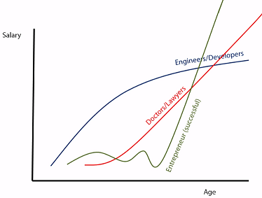
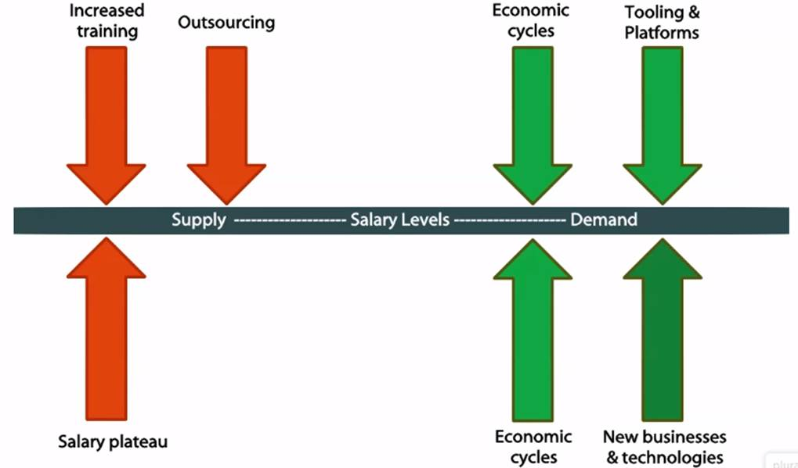

Job Security¶
In your company, there is only one should care about your job security: that is yourself. Many people treat the company as their home, put all their energy and be 100% loyal to the company, but seldom to think about themselves. There is nothing wrong with the attitude only if you are aware of the job security. Marketing is up-and-down and most companies needs to be profitable to survive. They have to lay off people if necessary, these people can be you no matter you treat the company as home or not. It will put you into a very negative situation if you do not prepare well for your job security.
Contents
Income¶
Job security will ensure you have income to grantee your living standard, and have the freedom to do what you like.
Income security¶
Job security is different from income security.
If your job is all your income, or you have big load but only depend on your current job to pay that, then you give the power to people in the company towards you. Think about having income besides your job salary, e.g. rent your spare rooms, have part-time job.
Take income security into your career management.
Emergency fund¶
Financial worries make people harder to think about other things and you need to prepare for the unexpected events.
Setup emergency fund, e.g. 6-8 months income.
Live (well) beneath your means¶
I like the quote from Richard Stallman:
I’ve always lived cheaply. And I like that, because it means that money is not telling me what to do. I can do what I think is important for me to do. Avoid getting sucked into expensive lifestyle habits. Because if you do that, then people with the money will dictate what you do with your life. You won’t be able to what’s really important to you.
Know your salary context¶
Different occupation has different salary trending when age increases. You need to be aware of it and plan accordingly.
There are several things impact salary, it is important you understand the ‘context’ of your salary especially when you want to do a job hopping.
Know the salary context, then you will know plan your skill set and plan where to go next.
Skill set¶
In order to get job security, the skills and knowledge are the key! For the technology skills/knowledge, you can look into my previous blog: Technology to Learn Next
At the meantime, soft skills are important to build, which will not be obsolete.
- Communication
- Leadership
- Networking
- Branding
Networking and branding are very important. A lot of the good job positions are by referral, search jobs is the last choice for you.
Please also be aware that one tricky thing about most soft skills is they are quite difficult to identify in an interview.
I will write blogs to explain the soft skill later.
Career path when aged¶
Different career path requires you prepare differently in order to get job security. Job security become more and more important when people get aged.
The technical path¶
Threats
- It’s harder to do the long hours
- Slower salary increases
- Pressure from lower cost experts
Advice
- Leverage experience to build strengths in the design and architecture
- Develop non-technical expertise
- Seek out companies have distinct technical career paths
- Domain knowledge can matter
- Build your brand
The management path¶
Maybe
- Potential higher salaries at many companies
- Less pressure to maintain technical edge
Advices
- Requires a distinct skill set, e.g. people management skills, business knowledge, project management, finance, logistics
Other path¶
- Product management
- Marketing
- Writing (documentation, books, articles, podcasts, webinars)
- Technical evangelist or support
- Teacher/trainer
- Executive/Entrepreneur
Join the right companies¶
Companies are different, join a company fits you will make your life easier. The followings are the pros/cons to join different companies according to their size.
Big companies¶
- Process is everything
- Limited impact
- Working 9-5
- Friends and mentors
- Politics
- Stability - security and income
- Opportunity - lateral and international moves
- The risk of mediocrity
Mid-size companies¶
- Process is relative
- Moderate impact
- Working 9-5,6,7...
- Friends and mentors
- Politics
- Stability - security and income
- Opportunity - fewer opportunities for lateral and international moves
- Mediocrity is noticed
Small companies¶
- Process is what?
- Large impact
- Working 9-a...am
- Friends and mentor - but watch the show
- Politics
- Stability - what is that again?
- Opportunity - move with the company
- Mediocrity is fired
Consulting¶
- Put on your sales hat, and a few others
- Adapting to the client
- Double the politics
- On your own
- Stability through diversity
- Lifestyle options
Entrepreneur¶
- You have to be crazy
- Know why you’re doing it
- Skills, advisors and partners
Written by Binwei@Oslo